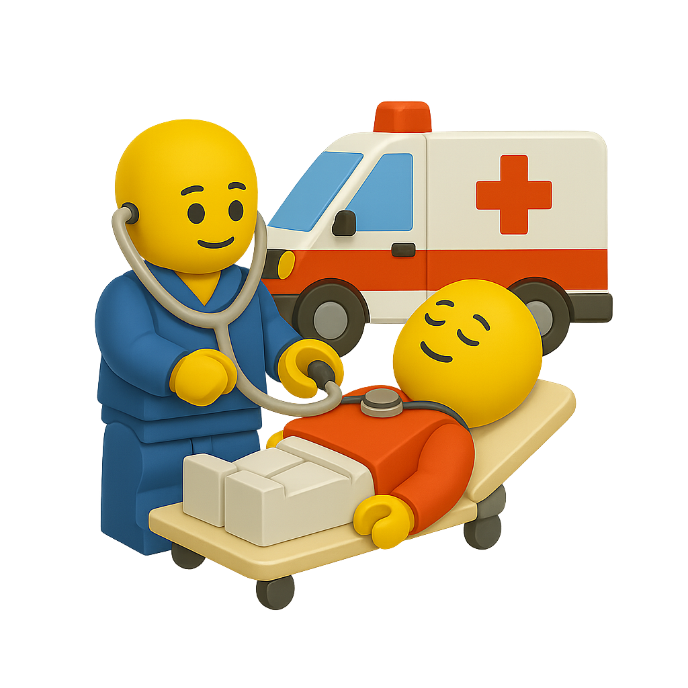

EMERGENCY MEDICAL CARE
救急医療事業
「助かるはずの命」を取りこぼさないために。
病院から遠い現場に、小回りの利く救急医療チームを届けます。
アメリカ・インド・日本での連携パートナーを募集しています。

事業コンセプト
救急車が来ない、病院まで数時間かかる——そんな「医療のすき間」にこそ、 最も柔軟で創造的な救急医療が必要だと考えています。JmAT Japan の救急医療事業は、 現地の医療資源・地理・文化を踏まえた「現場起点」の体制づくりを支援します。
提供する主な支援
- 外傷・急病に対する初期対応プロトコルの設計
- モバイル救急チーム（車両・人員）の立ち上げ支援
- 地域の診療所・病院との連携ルート設計
- 簡易トリアージ・現場判断のトレーニング
- 災害時・多数傷病者発生時のオペレーション設計
こんな現場にフィットします
- 農村部など、病院までの距離が遠い地域
- ホームレス支援など、路上・野外の活動が多い都市部
- 観光地・イベント会場など一時的に人口が集中する場所
- 災害リスクが高く、平時から備えが必要な地域
JmAT Japan の強み
医療だけでなく、建築・動線設計・プロダクト開発まで一体で考えられるのが私たちの特徴です。 「どこで、誰が、どの装備で、どう動くと救える命が増えるのか」を、 机上のプランではなく、現場に入りながらチューニングしていきます。
救急医療チームの立ち上げ・改善のご相談は、メールにてお気軽にお問い合わせください。